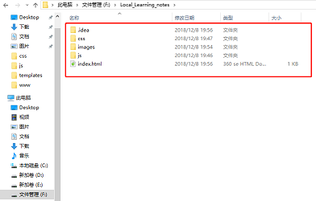
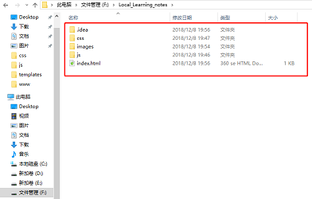

2018年12月8号-星期六
利用github page搭建个人网页的过程：先在github里新建一个repository

对repository的settings进行设置：

将git repository clone到本地任意盘，然后打开webstorm创建一个本地对应project，以后只要将本地project目录下的内容copy到git repository目录就行，
后续通过git bash 进行代码commit到git上（貌似webstorm也可自动commit）
 

进行git同步，在repository目录直接git bash：


输入网址，查看自己个人网站效果：